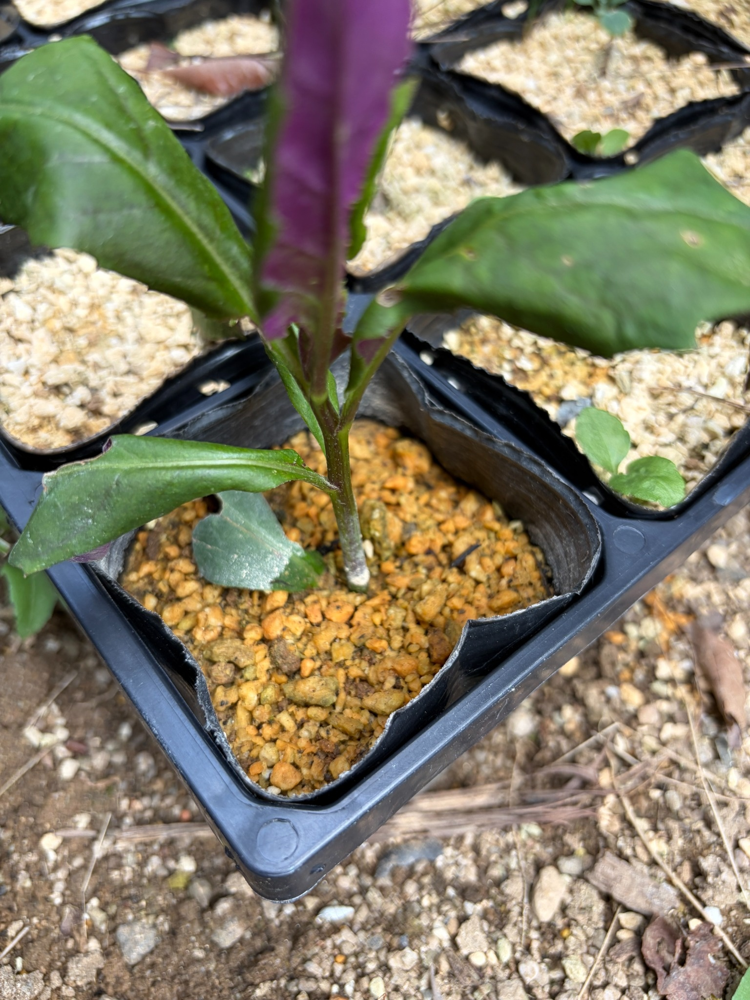

プランターと3号ポットに分けて挿し木
7月12日に記録した、JAで野菜として購入した金時草。春の開花とアサギマダラの訪花を楽しみに、少量のひと束から栽培を始めました。
プランターへ植え付ける前には、約2時間水を吸わせ、挿し木用の発根剤「ルートン」を切り口に付けてから土に挿しました。
ただ、すべて枯れてしまうのが心配だったため、プランターだけにまとめず、同じ方法で3号ポットにも挿し木しました。今回の写真は、その3号ポットで育てている金時草です。容器を分けて、両方の様子を見守ることにしました。
今のところ、どちらもしおれずに葉を保つ
7月22日現在、プランターと3号ポットの金時草は、どちらもしおれずにいます。まずは葉を保った状態が続いていることに、少し安心しています。
3号ポットの茎は土から立ち上がり、途中に付いた葉も形を保っています。葉が全体的に力なく垂れ下がる様子はなく、大きな葉は左右に広がっています。
7月12日は、プランターに植え付けた茎や葉の状態を記録しました。それから10日が経ち、今回は別に挿しておいた3号ポットの様子も残します。植え付けた直後だけでなく、その後もしおれずに経過していることを、今の段階での大切な変化として見ていきたいと思います。
緑色の葉と紫色の葉裏が見える
上の方には、左右に広がる大きな緑色の葉があります。葉の中央を通る葉脈が見え、葉先に向かって細くなる金時草らしい形を保っています。
中央には紫色の面をこちらに向けた葉が立ち上がり、下の葉でも、縁が反った部分から紫色の裏側がのぞいています。葉の向きによって緑色と紫色の見え方が変わり、小さなポットの中でも金時草の特徴がよく分かります。
下の方の葉には、縁が内側へ巻いたり、少し反り返ったりしているものがあります。ただ、葉が枯れて縮れている状態ではなく、緑色を保ったまま付いています。葉の巻き方や張りが今後どう変わるかも、続けて見ていきたいところです。
一部の葉には傷みが残る
葉の縁には欠けた部分があり、ところどころに小さな茶色い斑点や、縁が褐色になった部分も見られます。傷みのない葉ばかりではありませんが、葉全体が黄色くなったり、茶色く枯れ込んだりする状態にはなっていません。
7月12日のプランターでは、葉の穴や縁の傷みが目立っていました。今回のポットの葉にも部分的な傷みはありますが、別に挿した茎なので、前回の葉の傷みが回復したということではありません。それぞれの葉の状態を見ながら、この先、新しい葉が展開してくれるかを楽しみにしています。
茎は立った状態を保ち、花や蕾はまだ見られない
茎には緑色の部分と赤紫色を帯びた部分があり、葉の付け根付近では紫色がやや濃く見えます。地際まで茎の形を保ち、倒れたり折れたりした様子はありません。
茎の根元付近には白い付着物も見えます。植え付け時にはルートンを使用しましたが、根そのものは土の中にあるため、まだ発根の状態は分かりません。
また、写っている範囲には花や蕾、花房は見られません。今は開花よりも、挿した茎が葉を保ちながら根付き、その後の成長につながってくれることを見守っています。
発根を決めつけず、引き続き観察
しおれずにいるのはうれしい経過ですが、それだけで根が十分に出たとは言い切れません。今のところは「プランターも3号ポットも、葉を保っている」という状態として記録しておきます。
全滅を避けたいと思って分けて挿した金時草が、これからそれぞれ育ってくれたらうれしいです。引き続き、葉の張りや色、枝先の変化、茎の伸びを見ながら観察を続けていきたいと思います。
